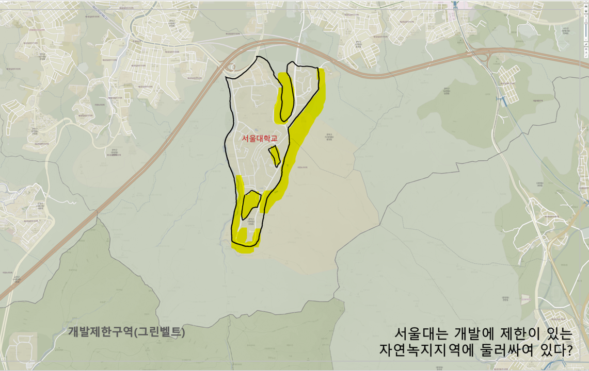
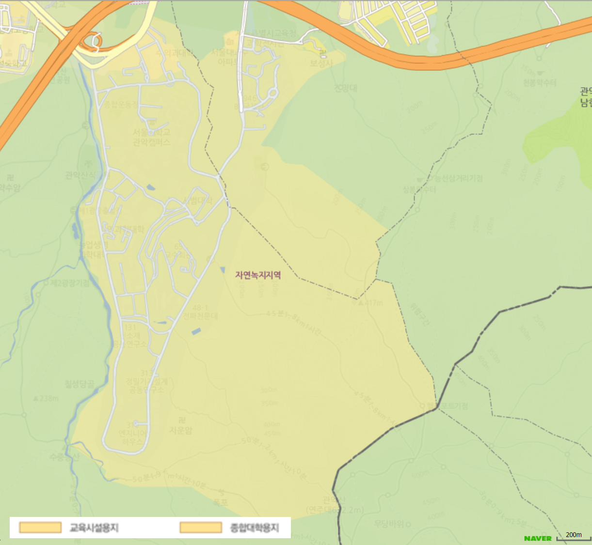
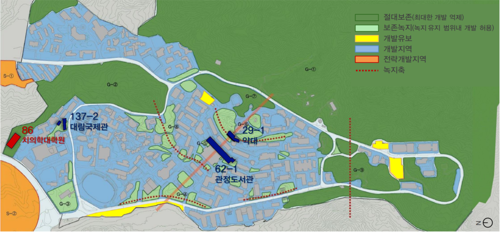
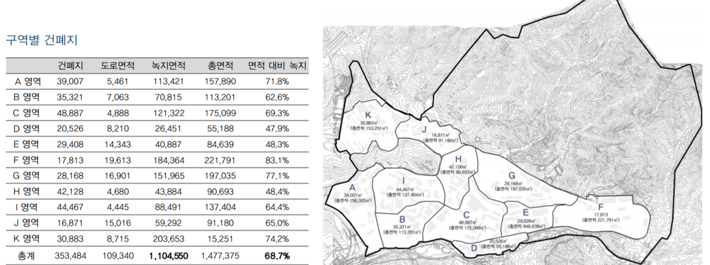
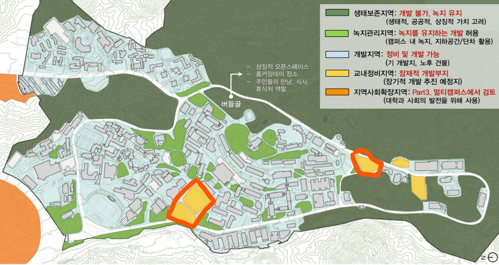
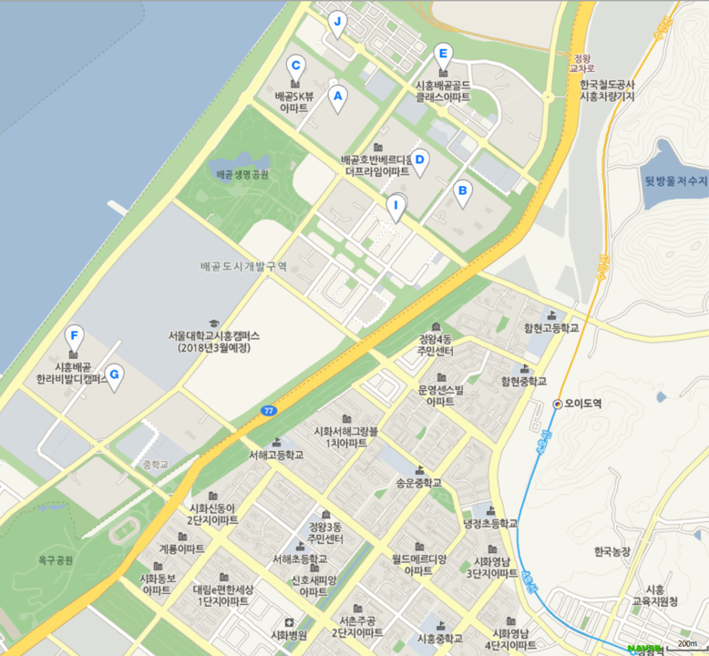
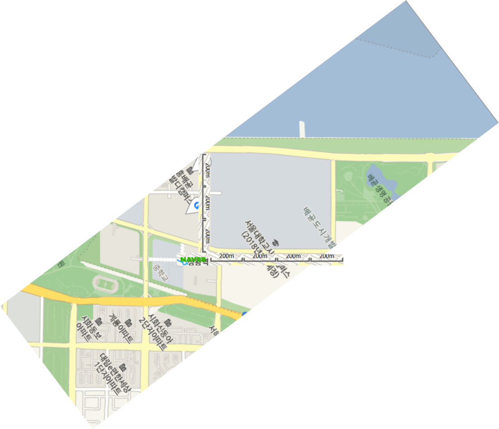
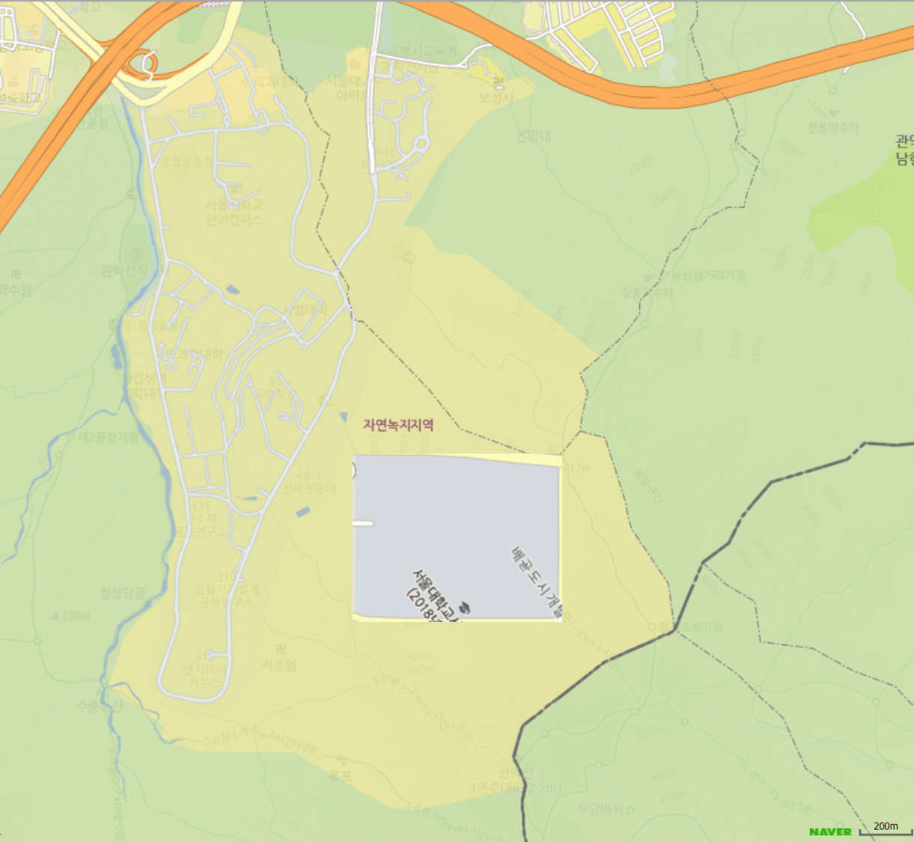

관악산 인근은 서울특별시-경기도의 경계에 있다. 그리고 이 지역의 대부분은 개발제한구역(그린벨트)으로 학교 건물을 짓기가 어렵다. 그러나 서울대 소유 부지는 건물을 쉽게 지을 수 있게 하기 위해 70년대 그린벨트를 제정할 당시 그린벨트에서 빠졌다. 하지만 현재 부지가 부족해서 시흥캠퍼스로 넘어간다는 입장을 학교는 밝혔다. 의문점으로 둘 수 있는 점들은 다음과 같다.
1) 대학 개발용 부지는 아직 일부분만 개발되어 있는 상태인데 왜 더 개발하지 않는가?
2) 주변 녹지 개발계획은 없는가?
3) 시흥캠퍼스의 규모는?

서울대학교 주변 땅은 학교 교육환경 보호 목적으로 자연녹지로 묶여있다. 서울대 정문에서 신림중학교까지 넓직한 평지에 건물을 지을 수 없는 것도 이런 이유이다. 환경적인 이슈도 관악구 내에서 나온다. '건강한도림천을만드는주민모임'과 같은 모임에서 서울대 건물이 들어서면 그만큼 녹지훼손이 일어나며 대형 건물을 짓는 과정에서 지하수가 발생하는데 집수장 없이 그대로 하수관으로 방류함으로써 지하수의 고갈을 유발하고 있다고 얘기한다.'
하지만 이러한 환경 요인들이 있음에도 관정도서관, 약대, 대림국제관, 관정도서관, 국제기숙사, 치과병원, 농생대과 같이 생태보존지역으로 학교에서 설정한 지역에 건물을 올린 이력이 있다. 추가 개발은 계속해서 꾸준히 이뤄지고 있으며 앞으로의 계획에도 추가 개발용 부지를 확보해나가고 있는 모습이다. 폐수영장과 같은 다양한 개발 수요가 있는 곳들이 많으며 추가 녹지 개발은 가능해 보인다.

그렇다면 법적으로 현재 서울대학교가 녹지를 더 훼손하는 것은 문제가 될까? 이를 위해 면적을 분석해보았다.
현행법에 따르면 대학 내 새로운 건물을 신축할 때는 전체 대학 부지 대비 1/3 이상의 녹지 면적 비율을 조성해야 한다. 하지만 서울대학교 전체 부지가 아닌 대학교 현재 사용 공간 기준으로 면적 대비 녹지 비율이 2/3 수준이다. 법의 기준으로는 추가 생태 보존 지역을 헤치지 않고도 충분한 공간 확보가 가능해보인다.

앞서 말한 바와 같이 교내 생태보존지역 그리고 녹지관리지역에서 잠재적개발지역, 개발지역으로 수정된 사례는 여러차례 있다. 현재로는 행전관 앞의 공터와 공대쪽에 있는 부지를 모두 잠재적개발지역으로 전환했다. 추가적인 녹지 개발계획이라고 볼 수 있으며 구체적인 개발 계획은 밝히지 않았으나 분명 잠재적개발지역으로 전환하는데 있어서는 개발을 진행하려는 움직임으로 보인다.
또한 녹지 면적 비율이 아직 넉넉한 수준에 있으며 아직 미개발인 상태의 대학 부지가 엄청 많은 수준이므로 필요한 만큼 단계적으로 개발을 지속적으로 해나갈 것으로 생각된다.




시흥캠퍼스 부지는 지도에서 대략적으로 확인했을 때 40만 제곱미터 수준으로 추정된다. 관악캠퍼스 부지는 약 400만 제곱미터 정도 되며 관악캠퍼스 부지의 10%수준밖에 되지 않는다고 볼 수 있다. 관악캠퍼스에 제대로 활용되지 않고 있는 부지(예:폐수영장 및 지하층수)를 잘 활용하고 지금까지 개발해온 수준에서 자연녹지를 개발한다고 했을 때 충분히 확보할 수 있는 수준의 땅이라고 볼 수 있다. 앞으로의 학생 수와 새로운 시설에 대한 수요가 가파른 수준으로 성장하지 않는 한 관악캠퍼스 내에서 충분히 해결할 수 있는 수준, 즉 포화상태는 아니라고 확인할 수 있었다. 학교측의 장기발전계획이 더 세부적으로 발표될 때까지는 현재 학교의 성장속도에는 관악캠퍼스 부지로 충분히 충당할 수 있을 것으로 보인다.